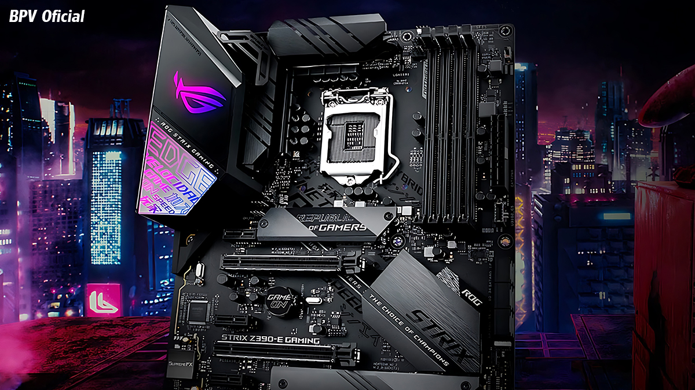

Placa-mãe
A placa central que conecta e permite a comunicação entre os componentes do computador.
A placa-mãe contém slots e conectores para que processador, módulos de memória RAM, unidades de armazenamento e outros itens sejam interconectados. Para funcionar corretamente, os componentes precisam seguir padrões de formato, comunicação e compatibilidade.

Principais características
- Conecta processador, memória, armazenamento e periféricos.
- Possui slots, conectores e circuitos de comunicação.
- Define parte da compatibilidade entre os componentes.
- É uma das principais bases físicas do computador.